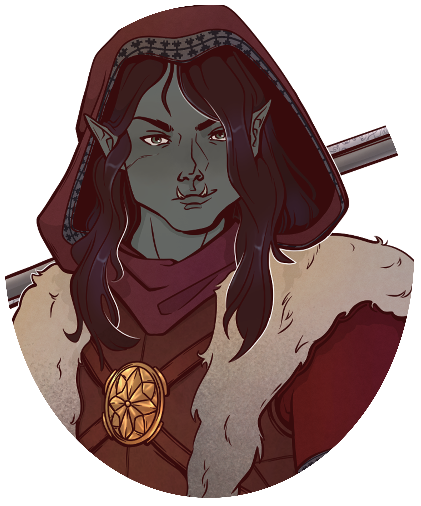
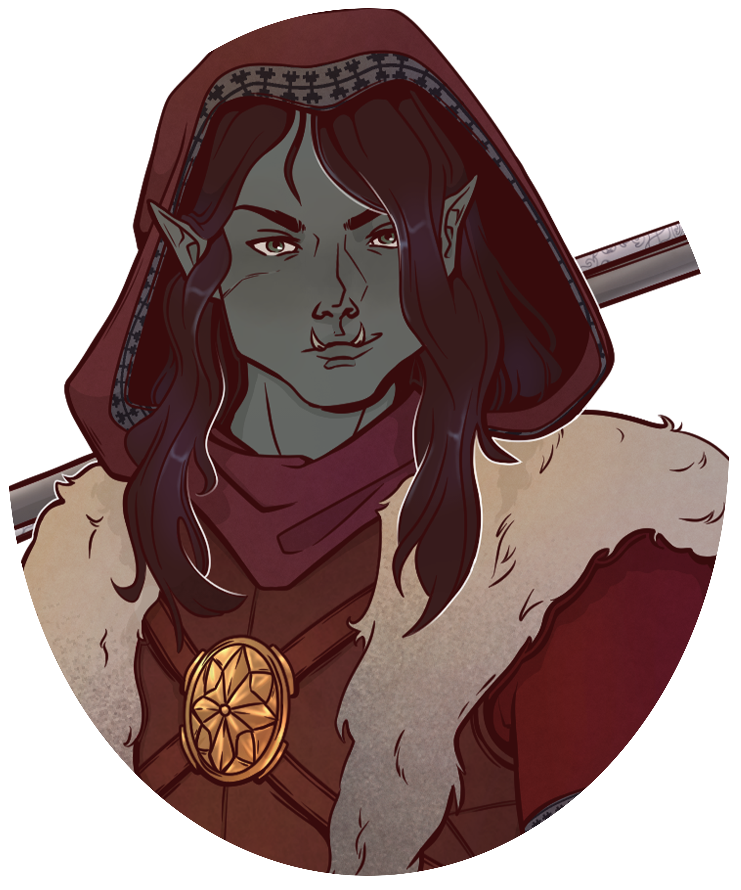

The Heirs of Ederia
 

Edwinn Falkrest
The Prince of the Pauper
His armor gleams in the morning sun as he kneels to offer a silent prayer, the faint smell of incense clinging to polished steel. Edwinn's life is a testament to service: a devoted cleric forever torn between his duties at home and his calling abroad. Born the first son of King Talon, yet of lowborn lineage, he wears his faith like a shield—protecting both the meek who adore him and the kingdom that questions him.
A Beacon of Hope
Edwinn's healing touch and gentle smile have earned him the unshakable loyalty of the common folk. Wherever he travels, rumors spread of a humble prince who prays before battle, who feeds the hungry, and who bandages the wounds of friend and stranger alike. Father Aldren Stillwater, his spiritual mentor, hails him as a future luminary of the Church. Even in distant lands, figures like Hrogar Grimhowl admire Edwinn's selflessness, forging bonds that stretch across borders.
Shadows of Doubt
But not everyone celebrates the prodigal son. The nobility whisper that Edwinn dodges his "true" responsibilities—healing peasants instead of securing political alliances at court. His prolonged absences fuel suspicions that he shirks royal duty in favor of personal glory. Some even dismiss him as a dreamer who values sermons over statecraft, quietly hoping his soft heart will fail him when the realm needs a steel spine.
Family Ties and Tensions
Ask his siblings what they think, and the answers range from warm embraces to rueful jabs. Edwinn's compassionate soul touches Via, who looks forward to his returned gifts and travels, while Xanthe's fierce discipline clashes with his gentle ways. Cailynn still carries fond memories of birthdays only he attended, and Marik welcomes each homecoming with a new round of truffle-hunting adventures. Yet all of them feel the gap left by his recurring departures—a closeness tinged by the ache of his absence.
Standing at the crossroads of humble faith and royal expectation, Edwinn Falkrest embodies a devotion that neither crown nor church can wholly command. Loved by many, doubted by some, and bound by duty to wander—his story stirs both hearts and suspicions across Ederia's Crimson Court.
Via Falkrest
The Windsight Princess
High in the royal library’s loftiest archives, Octavia pores over ancient scrolls—her hair shifting from dark to shimmering silver in the lamplight. A half-Air Genasi with a knack for divination, Via is the youngest child of King Talon, cherished for her sunny disposition and precocious arcane talent. Yet behind the friendly smiles and gentle encouragement she offers everyone lies a quieter longing: to prove her gifts are more than novelty, that she’s more than just the “little sister” in a house of ambitious royals.
A Spark of Wonder
Few can match her sheer enthusiasm for knowledge. While the Archmage praises her bright mind, older scholars fret her powers might draw unseen forces or worse. Her harmless mischief—like sneaking magical trinkets to local farmers—has won her admirers in distant fields, hailing her as an “Oracle.” Yet skeptics question whether her visions originate from benign magic—or something more ominous waiting beyond the swirling mists.
Loved but Overlooked
As for her siblings, some see a clever if naive princess whose magic could one day shape the course of the realm. Edwinn gamely indulges her endless game of “I Spy,” while Xanthe’s stern prodding keeps Via from sinking too deeply into daydreams. Cailynn humors her ritual experiments with guarded curiosity, and Marik, harboring lingering jealousy of her closeness with their mother, nonetheless teams up to decipher the keep’s hidden doors.
Though often overshadowed by her older siblings, Via's irrepressible hope and budding clairvoyance set her on a path that might one day outshine even the most powerful heirs. In the swirling winds of court intrigue, the youngest Falkrest may yet prove that true sight comes not from eyes that have seen the most battles, but from a heart that still believes in wonders.
Marik Falkrest
The Thorned Hawk
Marik strides onto the tournament field, Arkan rifle glinting in the sunlight and a blade fixed to its end—an unusual but deadly tribute to his rigorous training. A half-orc prince standing six feet tall, he melds practicality with a flair for spectacle. Whether dressed in muted leathers to vanish into the wild or donning bold reds in the royal arena, he seeks one thing: the roar of an awestruck crowd.
Ravenous for Victory
[Content about Marik's connection to nature will go here]
Webs of Allegiance and Rivalry
Engaged to Lady Selara Astralor, he nurtures a tender side at odds with his battle-honed exterior—she tends his wounds even though she loathes violence. Karn, his fiercest rival, fights him with unrelenting fervor, delivering the single combat he craves. Meanwhile, Elim’s teachings from Marik’s youth resonate whenever he slips into the forest to hunt or simply find quiet among the trees. When it comes to siblings, Marik shares truffle-hunting camaraderie with Edwinn and a hard-won alliance with Xanthe, who tested him relentlessly in childhood. In Cailynn’s darkest hour of public ridicule, he brazenly stepped in—earning disqualifications but also undying gratitude. And he collaborates with Via in midnight attempts to unlock the keep’s hidden doors, both chasing a curiosity that outlasts childhood rivalries.
Torn between a fierce hunger for acclaim and the familial bonds that soften his heart, Marik Falkrest is a prince whose every shot resonates with ambition—and whose every victory comes tinged with the price he’s willing to pay for glory.
Xanthe Falkrest
The Iron Heir
A stark figure in immaculate armor, Xanthe moves through the corridors of the Crimson Court with an uncompromising grace. Pale horns arch skyward, a silent proclamation of her pride, while her polished blade promises swift enforcement of the kingdom’s laws. As Talon’s second-eldest noble-born daughter, Xanthe bears the kingdom’s future like a burden she intends to master, not merely inherit.
A Pillar of Strength
No one can deny her ironclad resolve—soldiers and military traditionalists quietly favor her ascendancy. In her eyes, compassion has its place, but victory is assured only by unwavering vigilance. Blademaster Aleksey sees in Xanthe a disciple with the skill and discipline to become Ederia’s shield. Even when relegated to coordinating feasts and festivals, she manages each event with the rigor of a battlefield drill, determined to project strength at every turn.
Rumors of Darkness
Yet few can match the unease her presence commands in the common folk. Her cold manner and infernal appearance fuel whispers of pacts and devils. Past judgments have been swift and severe, stoking fears that she values order above mercy. While no open insurrection threatens her name, it’s clear there are those in the city who fear a day when she might rule with an iron fist rather than a forgiving heart.
Ties That Bind
Within her family, Xanthe’s fierce confidence sparks both admiration and conflict. She and Edwinn share a grudging respect, trading terse updates in lieu of emotional closeness. Octavia views her as a stalwart mentor—if occasionally overbearing—while Cailynn has endured Xanthe’s dismissive jibes since her early days in the keep. Only Marik openly supports her claim to the throne, though Xanthe’s methods in the training yard once left him bruised and bloodied. She listens to each sibling, yet her ambitions rise above them all.
Poised, tireless, and unyielding, Xanthe Falkrest stands as the embodiment of discipline in a court ruled by compassion. To some, she is the champion Ederia needs; to others, she is a warning of what happens when ambition outgrows empathy—and all eyes watch to see which side of her wins out.

Cailynn Falkrest
The Wyrdwitch
Cailynn moves through the Crimson Court like a phantom in stately robes—dark fabrics embroidered with old magic and Zharakii symbols half the nobility cannot decipher. Her left hand glitters with clawed rings, yet where her right should be, only a shimmering purple phantom remains, forever hinting at eldritch powers and the terror she once survived in the wilds. Samson, a ferret-like familiar with twisted horns, perches on her shoulder—a silent witness to whispered incantations and clandestine meetings.
A Diplomat and a Witch
In the public eye, Cailynn is a measured, well-spoken negotiator. Her skill in forging alliances and crafting talismans has endeared her to older noble families, who marvel at her ability to calm night terrors and soothe the broken. Yet there are just as many who recoil at her eerie command of otherworldly energies. Younger aristocrats snidely dismiss her as a stray from the Serpent Grove—an unworthy claimant with secrets better left unexposed.
Half-Embrace, Half-Scorn
Even within the royal family, Cailynn stands on a fault line between respect and suspicion. Edwinn recalls her kindness at lonely birthday feasts, though his initial mistake—treating her like a servant—still lingers between them. Xanthe, the iron-fisted heir, wrestles with grudging acceptance of her unusual magic; the two share little warmth but share even less tolerance for failure. Marik remains her most loyal defender, not afraid to risk reputation or disqualification to shield his sister’s honor. As for the youngest, Via—Cailynn trades cryptic bedtime tales and reluctant acts of guidance, watching from a distance to see if the budding mage can learn to stand on her own.
At once a trusted envoy and an unnerving witch, Cailynn Falkrest embodies the thin line between faith and fear. She is living proof that the crimson court’s greatest strength—and perhaps its gravest danger—can lie in the hush of whispered spells and the soft scratch of a phantom hand upon the throne’s arm.